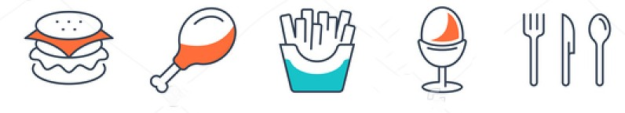
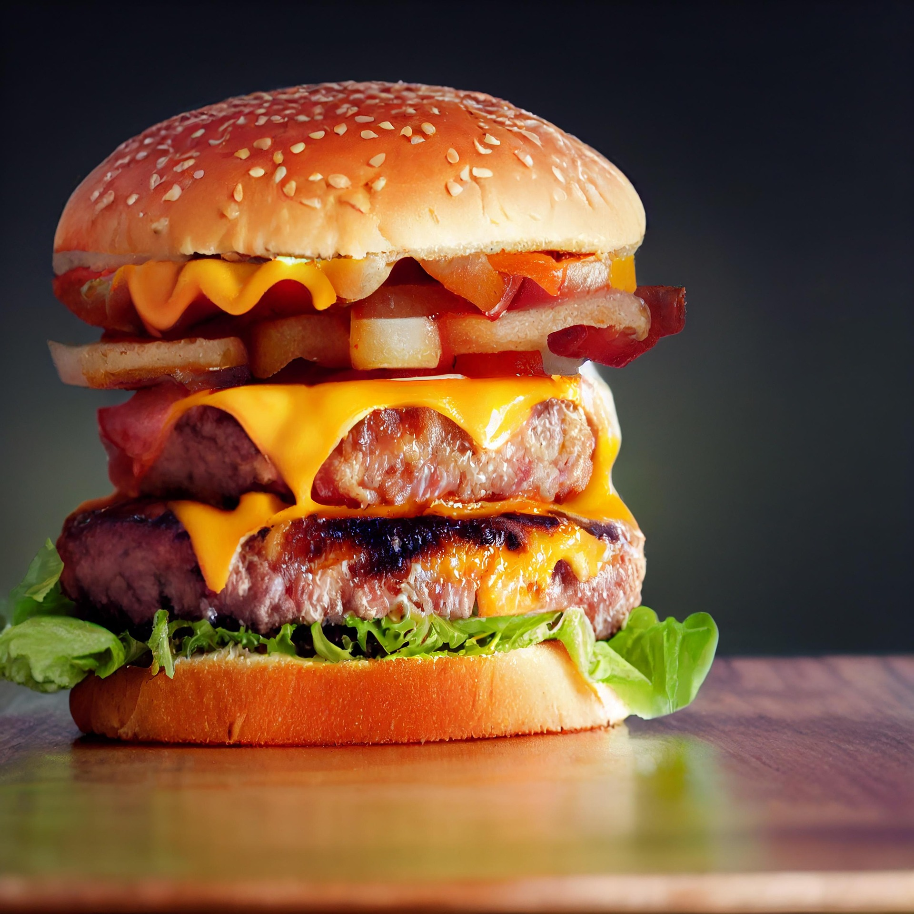

Knight Bite is one such concept which was highly successful in adapting to the emerging market.
Biters (customers), accepted and loved the KB app that made the ordering process much more easier. In two weeks of the release of the app, it was trending on top food apps and was downloaded by more than 5000 users across Mangalore and Manipal.

Locations
- Banglore Hours: 7:00pm-4:00am
- managluru Hours: 7:00pm-4:00am
- Manipal Hours: 7:00pm-4:00am
Knight Bite started with the idea to serve all the hungry nocturnals who find it really difficult to order late night muchies. KB brought together late night eaters and helped them order delicious meals at their convenience via Knight Bite App and call.